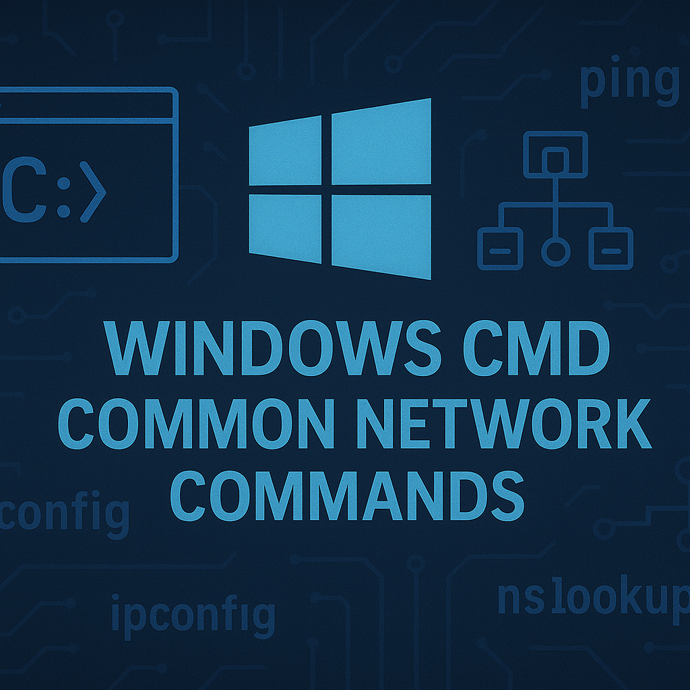

طراحی و پیادهسازی شبکه
طراحی کامل زیرساخت شبکه با استفاده از جدیدترین تکنولوژیها و
تجهیزات حرفهای. پیادهسازی شبکههای سازمانی با قابلیت اطمینان
بالا و عملکرد بهینه.
-
طراحی شبکههای LAN و WAN با تجهیزات Cisco و
MikroTik
-
پیادهسازی VLAN، QoS و امنیت شبکه
-
بهینهسازی عملکرد و کاهش هزینههای عملیاتی
-
پشتیبانی و نگهداری مداوم شبکه
با بیش از 5 سال تجربه در طراحی و پیادهسازی شبکههای سازمانی،
آماده ارائه خدمات تخصصی برای پروژههای مختلف هستم.

مدیریت سیستم
مدیریت حرفهای سرورهای Windows و Linux با تمرکز بر امنیت،
عملکرد و قابلیت اطمینان سیستمها.
-
مدیریت Windows Server و Active Directory
-
پیکربندی DNS، DHCP و Group Policy
-
مدیریت سرورهای Linux و سرویسهای وب
-
پشتیبانگیری و بازیابی اطلاعات
ارائه خدمات مدیریت سیستم با استانداردهای بینالمللی و بهترین
روشهای عملیاتی برای اطمینان از عملکرد بهینه.

دواپس و اتوماسیون
پیادهسازی فرآیندهای DevOps و اتوماسیون برای تسریع در توسعه و
استقرار نرمافزارها. استفاده از Docker، CI/CD و ابزارهای مدرن
DevOps.
-
کانتینریزاسیون با Docker و Kubernetes
-
راهاندازی خط لوله CI/CD
-
اتوماسیون فرآیندهای عملیاتی
-
مدیریت Infrastructure as Code
تسریع فرآیندهای توسعه و استقرار با استفاده از بهترین ابزارها و
روشهای DevOps برای افزایش کارایی و کاهش خطاهای انسانی.

مانیتورینگ و امنیت
پیادهسازی سیستمهای مانیتورینگ جامع و راهکارهای امنیتی برای
محافظت از زیرساختها و اطمینان از عملکرد مداوم سیستمها.
-
مانیتورینگ با Zabbix و Nagios
-
پیادهسازی امنیت شبکه و سیستم
-
استراتژیهای پشتیبانگیری و بازیابی
-
آلارمها و اعلانهای هوشمند
اطمینان از امنیت و قابلیت اطمینان سیستمها با مانیتورینگ مداوم
و پیادهسازی بهترین روشهای امنیتی.

راهکارهای مجازیسازی
پیادهسازی راهکارهای مجازیسازی با VMware vSphere و KVM برای
بهینهسازی استفاده از منابع و افزایش انعطافپذیری زیرساخت.
-
استقرار VMware vSphere و vCenter
-
مجازیسازی با KVM و OpenStack
-
مهاجرت به ابر و Hybrid Cloud
-
مدیریت منابع و High Availability
کاهش هزینهها و افزایش کارایی با مجازیسازی زیرساخت و
آمادهسازی برای مهاجرت به محیطهای ابری.
مشاوره فنی
ارائه مشاوره تخصصی در زمینه برنامهریزی زیرساخت IT، انتخاب
فناوریهای مناسب و استراتژیهای پیادهسازی برای رشد کسبوکار.
-
برنامهریزی زیرساخت IT
-
انتخاب فناوریهای مناسب
-
استراتژیهای پیادهسازی
-
مشاوره در زمینه امنیت و بهینهسازی
کمک به سازمانها در تصمیمگیریهای فنی و انتخاب بهترین
راهکارها برای دستیابی به اهداف کسبوکاری.